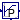
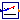
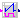

Extends from Modelica.Icons.VariantsPackage (Icon for package containing variants).
| Name | Description |
|---|---|
|  LimPID | P, PI, PD, and PID controller with limited output, anti-windup compensation and setpoint weighting |
| PIDHysteresis | PID controller with anti-windup, output limiter and output hysteresis |
| PIDHysteresisTimer | PID controller with anti-windup, hysteresis and timer to prevent short cycling |
| Ranks output signals such that y[i] >= y[i+1] | |
|  NumberOfRequests | Outputs the number of signals that are above/below a certain threshold |
|  OffTimer | Records the time since the input changed to false |
| Collection of models that illustrate model use and test models |
If the parameter reverseAction=false (the default),
then u_m < u_s increases the controller output,
otherwise the controller output is decreased.
Thus,
reverseAction = false,
reverseAction = true.
Extends from Modelica.Blocks.Continuous.LimPID (P, PI, PD, and PID controller with limited output, anti-windup compensation and setpoint weighting).
| Type | Name | Default | Description |
|---|---|---|---|
| SimpleController | controllerType | Modelica.Blocks.Types.Simple... | Type of controller |
| Real | k | 1 | Gain of controller [1] |
| Time | Ti | Time constant of Integrator block [s] | |
| Time | Td | Time constant of Derivative block [s] | |
| Real | yMax | 1 | Upper limit of output |
| Real | yMin | 0 | Lower limit of output |
| Real | wp | 1 | Set-point weight for Proportional block (0..1) |
| Real | wd | 0 | Set-point weight for Derivative block (0..1) |
| Real | Ni | 0.9 | Ni*Ti is time constant of anti-windup compensation |
| Real | Nd | 10 | The higher Nd, the more ideal the derivative block |
| Boolean | reverseAction | false | Set to true for throttling the water flow rate through a cooling coil controller |
| Initialization | |||
| InitPID | initType | Modelica.Blocks.Types.InitPI... | Type of initialization (1: no init, 2: steady state, 3: initial state, 4: initial output) |
| Boolean | limitsAtInit | true | = false, if limits are ignored during initializiation |
| Real | xi_start | 0 | Initial or guess value value for integrator output (= integrator state) |
| Real | xd_start | 0 | Initial or guess value for state of derivative block |
| Real | y_start | 0 | Initial value of output |
| Type | Name | Description |
|---|---|---|
| input RealInput | u_s | Connector of setpoint input signal |
| input RealInput | u_m | Connector of measurement input signal |
| output RealOutput | y | Connector of actuator output signal |
block LimPID
"P, PI, PD, and PID controller with limited output, anti-windup compensation and setpoint weighting"
extends Modelica.Blocks.Continuous.LimPID(
addP(k1=revAct*wp, k2=-revAct),
addD(k1=revAct*wd, k2=-revAct),
addI(k1=revAct, k2=-revAct),
yMin=0,
yMax=1);
parameter Boolean reverseAction = false
"Set to true for throttling the water flow rate through a cooling coil controller";
protected
parameter Real revAct = if reverseAction then -1 else 1;
end LimPID;
Block of a controller for set point tracking with a hysteresis element that switches the controller on and off.
If the controller is off, and the control error becomes larger than eOn, then
the controller switches to on and remains on until the control error is smaller than eOff.
When the controller is on, the set point tracking can be done using a P-, PI-, or PID-controller.
In its off-mode, the control output is zero. Thus, the parameters yMin and yMax are
used to constrain the output of the controller during its on mode only. This can be used, for
example, to modulate a device between 0.3 and 1.0, and switch it to off when the control error
is small enough.
Extends from Modelica.Blocks.Interfaces.SVcontrol (Single-Variable continuous controller).
| Type | Name | Default | Description |
|---|---|---|---|
| Hysteresis | |||
| Real | eOn | 1 | if off and control error > eOn, switch to set point tracking |
| Real | eOff | -eOn | if on and control error < eOff, set y=0 |
| Boolean | pre_y_start | false | Value of hysteresis output at initial time |
| Set point tracking | |||
| SimpleController | controllerType | Modelica.Blocks.Types.Simple... | Type of controller |
| Real | k | 1 | Gain of controller |
| Time | Ti | Time constant of Integrator block [s] | |
| Time | Td | Time constant of Derivative block [s] | |
| Real | yMax | 1 | Upper limit of output |
| Real | yMin | 0 | Lower limit of output |
| Real | wp | 1 | Set-point weight for Proportional block (0..1) |
| Real | wd | 0 | Set-point weight for Derivative block (0..1) |
| Real | Ni | 0.9 | Ni*Ti is time constant of anti-windup compensation |
| Real | Nd | 10 | The higher Nd, the more ideal the derivative block |
| Boolean | reverseAction | false | Set to true to enable reverse action (such as for a cooling coil controller) |
| Initialization | |||
| InitPID | initType | Modelica.Blocks.Types.InitPI... | Type of initialization (1: no init, 2: steady state, 3: initial state, 4: initial output) |
| Boolean | limitsAtInit | true | = false, if limits are ignored during initializiation |
| Real | xi_start | 0 | Initial or guess value value for integrator output (= integrator state) |
| Real | xd_start | 0 | Initial or guess value for state of derivative block |
| Real | y_start | 0 | Initial value of output |
| Type | Name | Description |
|---|---|---|
| input RealInput | u_s | Connector of setpoint input signal |
| input RealInput | u_m | Connector of measurement input signal |
| output RealOutput | y | Connector of actuator output signal |
model PIDHysteresis
"PID controller with anti-windup, output limiter and output hysteresis"
extends Modelica.Blocks.Interfaces.SVcontrol;
parameter Real eOn = 1
"if off and control error > eOn, switch to set point tracking";
parameter Real eOff = -eOn "if on and control error < eOff, set y=0";
parameter Boolean pre_y_start=false
"Value of hysteresis output at initial time";
parameter Modelica.Blocks.Types.SimpleController controllerType=Modelica.Blocks.Types.SimpleController.PID
"Type of controller";
parameter Real k=1 "Gain of controller";
parameter Modelica.SIunits.Time Ti "Time constant of Integrator block";
parameter Modelica.SIunits.Time Td "Time constant of Derivative block";
parameter Real yMax=1 "Upper limit of output";
parameter Real yMin=0 "Lower limit of output";
parameter Real wp=1 "Set-point weight for Proportional block (0..1)";
parameter Real wd=0 "Set-point weight for Derivative block (0..1)";
parameter Real Ni=0.9 "Ni*Ti is time constant of anti-windup compensation";
parameter Real Nd=10 "The higher Nd, the more ideal the derivative block";
parameter Boolean reverseAction = false
"Set to true to enable reverse action (such as for a cooling coil controller)";
parameter Modelica.Blocks.Types.InitPID initType=Modelica.Blocks.Types.InitPID.DoNotUse_InitialIntegratorState
"Type of initialization (1: no init, 2: steady state, 3: initial state, 4: initial output)";
parameter Boolean limitsAtInit=true
"= false, if limits are ignored during initializiation";
parameter Real xi_start=0
"Initial or guess value value for integrator output (= integrator state)";
parameter Real xd_start=0
"Initial or guess value for state of derivative block";
parameter Real y_start=0 "Initial value of output";
LimPID PID(
controllerType=controllerType,
k=k,
Ti=Ti,
yMax=yMax,
yMin=yMin,
wp=wp,
wd=wd,
Ni=Ni,
Nd=Nd,
initType=initType,
limitsAtInit=limitsAtInit,
xi_start=xi_start,
xd_start=xd_start,
y_start=y_start,
Td=Td,
reverseAction=reverseAction) "Controller for room temperature";
Modelica.Blocks.Logical.Hysteresis hys(
pre_y_start=pre_y_start,
uLow=eOff,
uHigh=eOn) "Hysteresis element to switch controller on and off";
Modelica.Blocks.Logical.Switch swi;
Modelica.Blocks.Sources.Constant zer(k=0) "Zero signal";
Modelica.Blocks.Math.Feedback feeBac;
Modelica.Blocks.Logical.Switch swi1;
equation
assert(eOff < eOn, "Wrong controller parameters. Require eOff < eOn.");
connect(zer.y, swi.u3);
connect(swi.y, y);
connect(u_m, PID.u_m);
connect(hys.y, swi.u2);
connect(PID.y, swi.u1);
connect(u_s, feeBac.u1);
connect(u_m, feeBac.u2);
connect(feeBac.y, hys.u);
connect(u_s, swi1.u1);
connect(hys.y, swi1.u2);
connect(u_m, swi1.u3);
connect(swi1.y, PID.u_s);
end PIDHysteresis;
Block of a controller for set point tracking with a hysteresis element that switches the controller on and off, and a timer that prevents the controller to short cycle.
The controller is similar to
Buildings.Controls.Continuous.PIDHysteresis but in addition,
it has a timer that prevents the controller from switching to on
too fast. When the controller switches off, the timer starts and
avoids the controller from switching on until minOffTime seconds elapsed.
Extends from Modelica.Blocks.Interfaces.SVcontrol (Single-Variable continuous controller).
| Type | Name | Default | Description |
|---|---|---|---|
| On/off controller | |||
| Real | minOffTime | 600 | Minimum time that devices needs to be off before it can run again |
| Real | eOn | 1 | if off and control error > eOn, switch to set point tracking |
| Real | eOff | -eOn | if on and control error < eOff, set y=0 |
| Boolean | pre_y_start | false | Value of hysteresis output at initial time |
| Set point tracking | |||
| SimpleController | controllerType | Modelica.Blocks.Types.Simple... | Type of controller |
| Real | k | 1 | Gain of controller |
| Time | Ti | Time constant of Integrator block [s] | |
| Time | Td | Time constant of Derivative block [s] | |
| Real | yMax | 1 | Upper limit of modulating output |
| Real | yMin | 0.3 | Lower limit of modulating output (before switch to 0) |
| Real | wp | 1 | Set-point weight for Proportional block (0..1) |
| Real | wd | 0 | Set-point weight for Derivative block (0..1) |
| Real | Ni | 0.9 | Ni*Ti is time constant of anti-windup compensation |
| Real | Nd | 10 | The higher Nd, the more ideal the derivative block |
| Boolean | reverseAction | false | Set to true to enable reverse action (such as for a cooling coil controller) |
| Initialization | |||
| InitPID | initType | Modelica.Blocks.Types.InitPI... | Type of initialization (1: no init, 2: steady state, 3: initial state, 4: initial output) |
| Boolean | limitsAtInit | true | = false, if limits are ignored during initializiation |
| Real | xi_start | 0 | Initial or guess value value for integrator output (= integrator state) |
| Real | xd_start | 0 | Initial or guess value for state of derivative block |
| Real | y_start | 0 | Initial value of output |
| Type | Name | Description |
|---|---|---|
| input RealInput | u_s | Connector of setpoint input signal |
| input RealInput | u_m | Connector of measurement input signal |
| output RealOutput | y | Connector of actuator output signal |
| output RealOutput | tOn | Time since boiler switched on |
| output RealOutput | tOff | Time since boiler switched off |
| output BooleanOutput | on | Outputs true if boiler is on |
model PIDHysteresisTimer
"PID controller with anti-windup, hysteresis and timer to prevent short cycling"
extends Modelica.Blocks.Interfaces.SVcontrol;
parameter Real minOffTime=600
"Minimum time that devices needs to be off before it can run again";
parameter Real eOn = 1
"if off and control error > eOn, switch to set point tracking";
parameter Real eOff = -eOn "if on and control error < eOff, set y=0";
parameter Boolean pre_y_start=false
"Value of hysteresis output at initial time";
parameter Modelica.Blocks.Types.SimpleController controllerType=Modelica.Blocks.Types.SimpleController.PID
"Type of controller";
parameter Real k=1 "Gain of controller";
parameter Modelica.SIunits.Time Ti "Time constant of Integrator block";
parameter Modelica.SIunits.Time Td "Time constant of Derivative block";
parameter Real yMax=1 "Upper limit of modulating output";
parameter Real yMin=0.3
"Lower limit of modulating output (before switch to 0)";
parameter Real wp=1 "Set-point weight for Proportional block (0..1)";
parameter Real wd=0 "Set-point weight for Derivative block (0..1)";
parameter Real Ni=0.9 "Ni*Ti is time constant of anti-windup compensation";
parameter Real Nd=10 "The higher Nd, the more ideal the derivative block";
parameter Boolean reverseAction = false
"Set to true to enable reverse action (such as for a cooling coil controller)";
parameter Modelica.Blocks.Types.InitPID initType=Modelica.Blocks.Types.InitPID.DoNotUse_InitialIntegratorState
"Type of initialization (1: no init, 2: steady state, 3: initial state, 4: initial output)";
parameter Boolean limitsAtInit=true
"= false, if limits are ignored during initializiation";
parameter Real xi_start=0
"Initial or guess value value for integrator output (= integrator state)";
parameter Real xd_start=0
"Initial or guess value for state of derivative block";
parameter Real y_start=0 "Initial value of output";
Modelica.Blocks.Interfaces.RealOutput tOn "Time since boiler switched on";
Modelica.Blocks.Interfaces.RealOutput tOff "Time since boiler switched off";
LimPID con(
controllerType=controllerType,
k=k,
Ti=Ti,
Td=Td,
wp=wp,
wd=wd,
Ni=Ni,
Nd=Nd,
initType=initType,
limitsAtInit=limitsAtInit,
xi_start=xi_start,
xd_start=xd_start,
y_start=y_start,
final yMin=yMin,
final yMax=yMax,
reverseAction=reverseAction) "Controller to track setpoint";
protected
Modelica.Blocks.Sources.Constant zer(k=0) "Zero signal";
Modelica.Blocks.Logical.Switch switch2;
Modelica.Blocks.Logical.GreaterEqualThreshold greaterEqualThreshold(threshold=
minOffTime);
Modelica.Blocks.Logical.And and3;
public
OffTimer offHys;
Modelica.Blocks.Logical.Timer onTimer;
protected
Modelica.Blocks.Logical.Not not1;
public
Modelica.Blocks.Logical.Timer offTimer;
Modelica.Blocks.Interfaces.BooleanOutput on
"Outputs true if boiler is on";
protected
Modelica.Blocks.Logical.Switch switch1;
public
Modelica.Blocks.Math.Feedback feeBac;
Modelica.Blocks.Logical.Hysteresis hys(
pre_y_start=pre_y_start,
uLow=eOff,
uHigh=eOn) "Hysteresis element to switch controller on and off";
equation
connect(u_m, con.u_m);
connect(zer.y,switch2. u3);
connect(switch2.y, y);
connect(and3.y,switch2. u2);
connect(greaterEqualThreshold.y, and3.u1);
connect(offHys.y, greaterEqualThreshold.u);
connect(con.y,switch2. u1);
connect(onTimer.y, tOn);
connect(offTimer.y, tOff);
connect(and3.y, on);
connect(and3.y, onTimer.u);
connect(and3.y, not1.u);
connect(not1.y, offTimer.u);
connect(and3.y, switch1.u2);
connect(u_s, switch1.u1);
connect(u_m, switch1.u3);
connect(switch1.y, con.u_s);
connect(u_s, feeBac.u1);
connect(u_m, feeBac.u2);
connect(feeBac.y, hys.u);
connect(hys.y, offHys.u);
connect(hys.y, and3.u2);
end PIDHysteresisTimer;
 Buildings.Controls.Continuous.SignalRanker
Buildings.Controls.Continuous.SignalRanker

Block that sorts the input signal u[:] such that the output
signal satisfies y[i] >= y[i+1] for all i=1, ..., nin-1.
This block may for example be used in a variable air volume flow controller to access the position of the dampers that are most open.
Extends from Modelica.Blocks.Interfaces.MIMO (Multiple Input Multiple Output continuous control block).
| Type | Name | Default | Description |
|---|---|---|---|
| Integer | nin | 1 | Number of inputs |
| Integer | nout | nin | Number of outputs |
| Type | Name | Description |
|---|---|---|
| input RealInput | u[nin] | Connector of Real input signals |
| output RealOutput | y[nout] | Connector of Real output signals |
block SignalRanker "Ranks output signals such that y[i] >= y[i+1]"
extends Modelica.Blocks.Interfaces.MIMO(final nout=nin);
protected
Real t "Temporary variable";
algorithm
y[:] := u[:];
for i in 1:nin loop
for j in 1:nin-1 loop
if y[j] < y[j+1] then
t := y[j+1];
y[j+1] := y[j];
y[j] := t;
end if;
end for;
end for;
end SignalRanker;
Block that outputs the number of inputs that exceed a threshold.
The parameter kind is used to determine the kind of the
inequality. The table below shows the allowed settings.
Value of parameter kind |
Output signal incremented by 1 for each i ∈ {1, ..., nin} if |
|---|---|
| 0 | u[i] > threShold |
| 1 | u[i] ≥ threShold |
| 2 | u[i] ≤ threShold |
| 3 | u[i] < threShold |
This model may be used to check how many rooms exceed a temperature threshold.
Extends from Modelica.Blocks.Interfaces.BlockIcon (Basic graphical layout of input/output block).
| Type | Name | Default | Description |
|---|---|---|---|
| Integer | nin | Number of inputs | |
| Real | threShold | 0 | Threshold |
| Integer | kind | Set to 0 for u>threShold, to 1 for >=, to 2 for <= or to 3 for < |
| Type | Name | Description |
|---|---|---|
| output IntegerOutput | y | Number of input signals that violate the threshold |
| input RealInput | u[nin] | Input signals |
block NumberOfRequests
"Outputs the number of signals that are above/below a certain threshold"
extends Modelica.Blocks.Interfaces.BlockIcon;
parameter Integer nin "Number of inputs";
parameter Real threShold = 0 "Threshold";
parameter Integer kind
"Set to 0 for u>threShold, to 1 for >=, to 2 for <= or to 3 for <";
Modelica.Blocks.Interfaces.IntegerOutput y
"Number of input signals that violate the threshold";
Modelica.Blocks.Interfaces.RealInput u[nin] "Input signals";
algorithm
y := 0;
for i in 1:nin loop
if kind == 0 then
if u[i] > threShold then
y := y+1;
end if;
end if;
if kind == 1 then
if u[i] >= threShold then
y := y+1;
end if;
end if;
if kind == 2 then
if u[i] <= threShold then
y := y+1;
end if;
end if;
if kind == 3 then
if u[i] < threShold then
y := y+1;
end if;
end if;
end for;
end NumberOfRequests;

Block that records the time that has elapsed since its input signal switched to false.
At the beginning of the simulation, this block outputs the time that has elapsed since the start of the simulation. Afterwards, whenever its input switches to false, the timer is reset.
Extends from Modelica.Blocks.Interfaces.partialBooleanBlockIcon (Basic graphical layout of logical block).
| Type | Name | Description |
|---|---|---|
| input BooleanInput | u | Connector of Boolean input signal |
| output RealOutput | y | Connector of Real output signal |
model OffTimer "Records the time since the input changed to false" extends Modelica.Blocks.Interfaces.partialBooleanBlockIcon;Modelica.Blocks.Interfaces.BooleanInput u "Connector of Boolean input signal"; Modelica.Blocks.Interfaces.RealOutput y "Connector of Real output signal"; protected discrete Modelica.SIunits.Time entryTime "Time instant when u became true"; initial equation pre(entryTime) = 0; equation when (not u) then entryTime = time; end when; y = time - entryTime;end OffTimer;